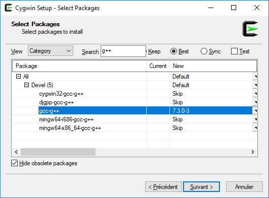

The following tutorial will show you how to get started with n3rv on windows environments. As you will see, the process is not a walk in the park. Sorry for that, we will try to do better for the next releases.
The first step of our windows journey will be to install cygwin on the windows box you plan to develop n3rv services on. Go to http://www.cygwin.com/install.html and download the file setup_x86_64.exe. Once it is downloaded, launch it. Go through the install steps until you get to the packages selection:
Here are the packages that you will have to select:
- gcc-core
- gcc-g++
- cmake
- make
- libzmq5 v4.2.3
- libzmq-devel v4.2.3
- git
- vim
- wget
Note: to avoid toolchain config errors, please make sure that the gcc-core package and gcc-g++ are installed with the same version number.
Using the n3rv prebuilt package will save you the entire step 3 (the most painful), which is quite convenient. However if you encounter problems building your own projects afterwards, i’m afraid that you’ll still have to go through it.
Now it is time to open a cygwin Terminal (Cygwin64 Terminal) to type a few things:
wget -qOn3rv-cygwin-win64.tgz https://n3rvcpp.github.io/pkg/n3rv-cygwin-win64.tgz
tar -xvzf n3rv-cygwin-win64.tgz -C/
And this is it, your cygwin is now ready for n3rv services development. Let’s go to step 4 !
If you deliberately chose to build the windows version of the n3rv library, then let’s go. As with the simple method we will need to open a new Cygwin terminal (Cygwin64 Terminal):
First we need to download the zmq.hpp header for our version of libzmq:
wget -qO/usr/include/zmq.hpp https://raw.githubusercontent.com/zeromq/cppzmq/v4.2.3/zmq.hpp
The version of libevent provided with cygwin is too old, this is why we will have to build it ourselves. It’s no big deal.
First we fetch the library source code:
wget -qO./libevent.tgz https://github.com/libevent/libevent/releases/download/release-2.1.8-stable/libevent-2.1.8-stable.tar.gz
tar -xvzf libevent.tgz
Then we launch the build process:
pushd .
cd libevent-2.1.8-stable
./configure --prefix=/usr && make && make install
popd
Note: Depending on your machine’s power, it can take some time.
Now it is time to get the n3rv library source code from github:
cd ~
git clone https://github.com/n3rvcpp/n3rv
In order to build correctly on cygwin, the n3rv cmake file needs to be modified a bit. Open {C:cygwinhome<user>}n3rvCMakeLists.txt with your favourite text editor, and change the following elements:
Save the file & you’re done for this step.
We are now ready to compile our code, let’s cross your fingers and type:
cd ~/n3rv
cmake -DCMAKE_INSTALL_PREFIX=/usr .
make && make install
Now that we’re done with the n3rv library install, we’re going to setup the dev environnment (IDE). We choose code::blocks because of it’s support for the cygwin gcc toolchain, and because it’s free (in both ways). The code::blocks installer can be found at http://www.codeblocks.org/downloads/binaries.
Note: do not take the mingw version, it’s useless for us.
Once it has finished installing, launch the software.
Once in codeblocks, go to Settings => Compiler to configure compiler options:

- Selected Compiler: Cygwin GCC
- Compiler’s install dir: <Your Cygwin install path>
A pre-configured code::blocks project can be downloaded at https://n3rvcpp.github.io/pkg/n3rv-hello-codeblock.zip Unzip-it and open n3rv_hello/n3rv_hello.cbp with codeblocks.
Depending on where you installed cygwin, you will have to modify a bit the Project’s Build options. To do this, right click on the project’s name on the left bar, then choose Build Options. You should see the following menu:

Go to the search directories tab and edit linker/compiler search paths to match with your own cygwin install path.
If you followed all the previous steps, the Hello project should be able to build and run without any issue:
This is it, you are now ready to develop n3rv architectures on Windows !
Once you’ve finished developping your n3rv service on windows, you will probably want to deploy the compiled binaries on multiple windows hosts. Good news: you do not need to install cygwin on every host, you juste need to provide the runtime Dlls along with your binaries:
{kind=link}
{kind=link}
{kind=link}